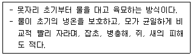
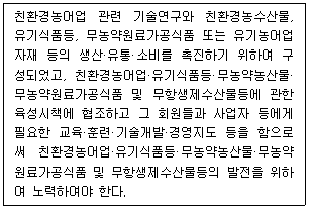
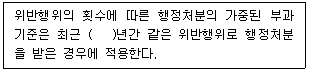
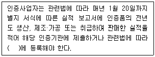
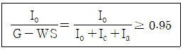

유기농업기사 (2022-04-24 기출문제)
1과목: 재배원론
1. 다음 중 산성토양에서 작물의 적응성이 가장 약한 것은?
- 호밀
- 땅콩
- 토란
- 시금치
(정답률: 알수없음)

2. 다음 중 탄산시비의 효과로 옳지 않은 것은?
- 수량 증가
- 개화 수 증가
- 착과율 증가
- 광합성 속도 감소
(정답률: 알수없음)
3. 대기 중 이산화탄소의 농도로 옳은 것은?
- 약 0.03%
- 약 0.09%
- 약 0.15%
- 약 0.20%
(정답률: 알수없음)
4. 다음 중 굴광현상에 가장 유효한 광은?
- 청색광
- 녹색광
- 황색광
- 적색광
(정답률: 알수없음)
5. 다음 중 장일효과를 유도하기 위한 야간조파에 효과적인 광의 파장은?
- 300~350nm
- 380~420nm
- 600~680nm
- 300nm 이하
(정답률: 알수없음)
6. 다음 중 식물분류학적 방법에서 작물 분류로 옳지 않은 것은?
- 벼과 작물
- 콩과 작물
- 가지과 작물
- 공예 작물
(정답률: 알수없음)
7. 다음 중 연작에 의해서 나타나는 기지현상의 원인으로 옳지 않은 것은?
- 토양 비료분의 소모
- 염류의 감소
- 토양 선충의 번성
- 잡초의 번성
(정답률: 알수없음)
8. 다음 중 종자 휴면의 원인과 관련이 없는 것은?
- 경실 종자
- 발아억제물질
- 배의 성숙
- 종피의 불투기성
(정답률: 알수없음)
9. 다음 중 영양번식의 취목에 해당하지 않는 것은?
- 성토법
- 분주
- 휘묻이
- 고취법
(정답률: 알수없음)
10. 다음 중 사과의 축과병, 담배의 끝마름병으로 분열조직에서 괴사를 일으키는 원인으로 옳은 것은?
- 칼슘의 결핍
- 아연의 결핍
- 붕소의 결핍
- 망간의 결핍
(정답률: 알수없음)
11. 다음 중 접목부위로 옳게 나열된 것은?
- 대목의 목질부, 접수의 목질부
- 대목의 목질부, 접수의 형성층
- 대목의 형성층, 접수의 목질부
- 대목의 형성층, 접수의 형성층
(정답률: 알수없음)
12. 다음 중 내염성 작물로 가장 옳은 것은?
- 감자
- 완두
- 목화
- 사과
(정답률: 알수없음)
13. 무기성분 중 벼가 많이 흡수하는 것으로 벼의 잎을 직립하게 하여 수광상태가 좋게 되어 동화량을 증대시키는 효과가 있는 것은?
- 규소
- 망간
- 니켈
- 붕소
(정답률: 알수없음)
14. 다음 중 중성식물로 옳은 것은?
- 시금치
- 고추
- 벼
- 콩
(정답률: 알수없음)
15. 환상박핃 대 화아분화가 촉진되고 과실의 발달이 조장되는 작물의 내적균형 지표로 가장 알맞은 것은?
- C/N율
- S/R율
- T/R율
- R/S율
(정답률: 알수없음)
16. 다음 중 건물 생산이 최대로 되는 단위면적당 군락엽면적을 뜻하는 용어로 옳은 것은?
- 포장동화능력
- 최적엽면적
- 보상점
- 광포화점
(정답률: 알수없음)
17. 다음 중 전분 합성과 관련된 효소로 옳은 것은?
- 아밀라아제
- 포스포릴라아제
- 프로테아제
- 리파아제
(정답률: 알수없음)
18. 다음 중 골사이나 포기사이의 흙을 포기 밑으로 긁어 모아 주는 것을 뜻하는 용어로 옳은 것은?
- 멀칭
- 답압
- 배토
- 제경
(정답률: 알수없음)
19. 다음 중 식물 세포의 크기를 증대시키는데 직접적으로 관여하는 것으로 가장 옳은 것은?
- 팽압
- 막압
- 벽압
- 수분포텐셜
(정답률: 알수없음)
20. 리비히가 주장하였으며 생산량은 가장 소량으로 존재하는 무기성분에 의해 지배받는다는 이론은 무엇인가?
- 최소양분율
- 유전자중심설
- C/N율
- 하디-바인베르크법칙
(정답률: 알수없음)
2과목: 토양비옥도 및 관리
21. 염기포화도에서 고려되는 교환성 염기가 아닌 것은?
- Ca2+
- Mg2+
- Na+
- Al3+
(정답률: 알수없음)
22. 어떤 토양의 흡착이온을 분석할 결과 Mg = 2 cmol/kg, Na = 1 cmol/kg, Al = 2 cmol/kg, H = 4 cmol/kg, K = 2 cmol/kg 이었다. 이 토양의 CEC가 12 cmol/kg이고 염기포화도는 75%로 계산되었다. 이 토양의 치환성칼슘의 양은 몇 cmol/kg으로 추정되는가?
- 1
- 2
- 3
- 4
(정답률: 알수없음)
23. 주로 혐기성균에 의해 일어나는 질소대사는?
- 암모니아화성작용
- 질산화성작용
- 탈질작용
- 산화적 탈아미노반응
(정답률: 알수없음)
24. 식물생장촉진 근권미생물의 기능이 아닌 것은?
- 질소고정
- 식물생장촉진호르몬 생성
- 시데로포아(siderophore) 생성
- 타감작용(alleropathy)
(정답률: 알수없음)
25. 유기물의 탄질률과 토양 질소에 대한 설명으로 옳은 것은?
- 탄질률 20 이하인 유기물을 사용하면 토양 중의 무기질소 함량이 감소한다.
- 탄질률이 낮은 유기물일수록 토양 무기질소의 부동화를 촉진시킨다.
- 탄질률이 높은 유기물을 시용하면 질산화작용이 촉진된다.
- 탄질률이 높은 유기물은 작물의 무기질소 흡수를 방해할 수 있다.
(정답률: 알수없음)
26. 토양 입단구조의 중요성에 대한 설명으로 가장 거리가 먼 것은?
- 토양의 통기성과 통수성에 영향을 미친다.
- 토양 침식을 억제한다.
- 토양 내에 호기성 미생물의 활성을 증대시킨다.
- Na 이온은 토양의 입단화를 촉진시킨다.
(정답률: 알수없음)
27. 다음 중 접시와 같은 모양이거나 수평배열의 토괴로 구성된 구조로 토양생성과정 중에 발달하거나 인위적인 요인에 의하여 만들어지며, 모재의 특성을 그대로 간직하고 있는 것은?
- 괴상구조
- 각주상구조
- 원주상구조
- 판상구조
(정답률: 알수없음)
28. 토양의 생성인자로 가장 거리가 먼 것은?
- 지형(경사도, 경사면)
- 기후(강수, 기온)
- 생명체(식생, 토양동물)
- 작물재배(시비, 경운)
(정답률: 알수없음)
29. 다음 중 탄질률이 가장 높은 것은?
- 옥수수 찌꺼기
- 알팔파
- 블루그라스
- 활엽수의 톱밥
(정답률: 알수없음)
30. 유기물의 토양물리성에 미치는 영향이 아닌 것은?
- 보수력 증가
- 입단화 촉진
- 완충능 감소
- 온도상승
(정답률: 알수없음)
31. 우리나라 토양통을 토지이용 형태 기준으로 구분할대 토양통 수가 가장 많은 토지이용 형태는?
- 과수원토양
- 밭토양
- 논토양
- 산림토양
(정답률: 알수없음)
32. 다음 중 양이온교환용량이 가장 높은 토양콜로이드는?
- vermiculite
- sesquioxides
- kaolinite
- hydrous mica
(정답률: 알수없음)
33. 다음 중 식물성 유기질 비료로 탄질률이 가장 높은 것은?
- 채종박
- 대두박
- 면실박
- 미강유박
(정답률: 알수없음)
34. 화성암 중 중성암으로만 짝지어진 것은?
- 석영반암, 휘록암
- 안산암, 섬록암
- 현무암, 반려암
- 화강암, 섬록반암
(정답률: 알수없음)
35. 암모늄태 질소를 아질산태 질소로 산화시키는데 주로 관여하는 세균은?
- Nitrobacter
- Nitrosomonas
- Micrococcus
- Azotobacter
(정답률: 알수없음)
36. 다음 중 풍화가 가장 어려운 광물은?
- 백운모
- 방해석
- 정장석
- 흑운모
(정답률: 알수없음)
37. 다음 중 칼리 함량이 많은 장석이 염기물질의 신속한 용탈작용을 받았을 때 가장 먼저 생성되는 점토광물은?
- illite
- kaolinite
- vermiculite
- chlorite
(정답률: 알수없음)
38. 토양단면 중 농경지의 표층토(경작층)을 가장 옳게 표시한 것은?
- Bo
- Bt
- Rz
- Ap
(정답률: 알수없음)
39. 스멕타이트를 많이 포함한 토양에 부숙된 유기물을 가할 때 나타나는 현상이 아닌 것은?
- 수분 보유력이 증가한다.
- 토양 pH가 감소한다.
- CEC가 증가한다.
- 입단화 현상이 증가한다.
(정답률: 알수없음)
40. 유기물의 분해속도에 대한 설명으로 틀린 것은?
- 호기성 조건이 혐기성 조건보다 빠르다.
- 리그닌 및 페놀함량이 많으면 느리다.
- 중성보다 강산성에서 늦다.
- 탄질률이 클수록 빠르다.
(정답률: 알수없음)
3과목: 유기농업개론
41. 다음 중 C3 식물은?
- 옥수수
- 사탕수수
- 기장
- 보리
(정답률: 알수없음)
42. 포도나무의 정지법으로 흔히 이용되는 방법이며, 가지를 2단 정도로 길게 직선으로 친 철사에 유인하여 결속시킨 것은?
- 절단형 정지
- 원추형 정지
- 변칙주간형 정지
- 울타리형 정지
(정답률: 알수없음)
43. 토양의 질적 수준 및 토양비옥도 유지·증진 수단의 실천기술이 아닌 것은?
- 연작
- 간작
- 녹비
- 윤작
(정답률: 알수없음)
44. 1920년대 영국에서 토마토에 발생했던 해충인 온실가루이를 방제했던 기생성 천적은?
- 칠성풀잠자리
- 온실가루이좀벌
- 성페로몬
- 칠레이리응애
(정답률: 알수없음)
45. 고온장해에 대한 설명으로 틀린 것은?
- 당분이 감소한다.
- 광합성보다 호흡작용이 우세해진다.
- 단백질의 합성이 저해된다.
- 암모니아의 축척이 적어진다.
(정답률: 알수없음)
46. 녹비작물의 토양 혼힙에 대한 설명으로 틀린 것은?
- 지력을 유지하는데 필요하다.
- 토양 내 유기물 함량이 감소된다.
- 토양의 무기물 및 미생물 체내 질소가 증가한다.
- 토양 혼입 시 1개월 이내에 대부분의 녹비작물이 토양 속에서 분해된다.
(정답률: 알수없음)
47. 동물복지(Animal Welfare) 개선을 위한 조치로 잘못된 것은?
- 양질의 유전자변형사료 공급
- 적절한 사육 공간 제공
- 스트레스 최소화와 질병예방
- 건강증진을 위한 가축관리
(정답률: 알수없음)
48. 벼 친환경재배 시 규산질 비료 시용을 권장하는 이유로 가장 적합한 것은?
- 다량원소를 공급함으로써 병충해 저항성을 높인다.
- 토양의 이학적 성질을 개선하고 균형시비 효과를 얻을 수 있다.
- 벼의 수광자세를 개선하여 건실한 생육을 조장한다.
- 질소질 비료의 흡수를 촉진하여 벼가 건강히 자라도록 한다.
(정답률: 알수없음)
49. 다음 친환경농업을 위한 작물육종 목표 중 가장 중요한 것은?
- 병해충 저항성
- 수량안정성 및 다수성
- 조숙성
- 단기생육성
(정답률: 알수없음)
50. 다음에서 설명하는 육묘방식은?

- 물못자리
- 밭못자리
- 보온밭못자리
- 상자육묘
(정답률: 알수없음)
51. 다음 중 CAM 식물은?
- 벼
- 파인애플
- 담배
- 명아주
(정답률: 알수없음)
52. 양질의 퇴비를 판정하는 방법으로 틀린 것은?
- 가축분뇨는 냄새가 약할수록 좋은 것으로 본다.
- 퇴비에 물기가 거의 없어야 좋은 것으로 본다.
- 퇴비는 부서진 형상보다 그 형상을 유지할수록 좋은 것으로 본다.
- 퇴비의 색은 흑갈색~흑색에 가까울수록 좋은 것으로 본다.
(정답률: 알수없음)
53. 우리나라에서 친환경농업육성법이 제정된 후 정부가 친환경농업 원년을 선포한 연도는?
- 1997년
- 1998년
- 1999년
- 2000년
(정답률: 알수없음)
54. 『농림축산식품부 소관 친환경농어업 육성 및 유기식품 등의 관리·지원에 관한 법률 시행규칙』 상 병해충 관리를 위하여 사용 가능한 물질 중 사용 가능 조건이 “달팽이 관리용으로만 사용할 것”인 것은?
- 벤토나이트
- 규산나트륨
- 규조토
- 인산철
(정답률: 알수없음)
55. 타식성 작물로만 나열된 것은?
- 밀, 보리
- 콩, 완두
- 딸기, 양파
- 토마토, 가지
(정답률: 알수없음)
56. 혼파에 대한 설명으로 적절하지 않은 것은?
- 잡초가 경감된다.
- 산초량이 평준화된다.
- 공간을 효율적으로 이용할 수 있다.
- 파종작업이 편리하다.
(정답률: 알수없음)
57. 다음 중 광합성자급영양생물에 해당하는 것은?
- 질화세균
- 남세균
- 황산화세균
- 수소산화세균
(정답률: 알수없음)
58. 녹비작물로 이용하는 헤어리베치 생초 2000kg에 함유된 질소 성분량은 얼마인가? (단, 헤어리베치의 수분은 85%, 건초 질소 함량은 4%를 기준으로 한다.)
- 10kg
- 12kg
- 15kg
- 16kg
(정답률: 알수없음)
59. 다음 중 광포화점이 가장 높은 채소는?
- 생강
- 강낭콩
- 토마토
- 고추
(정답률: 알수없음)
60. 포기를 많이 띄워서 구덩이를 파고 이식하는 방법은?
- 조식
- 이앙식
- 혈식
- 노포크식
(정답률: 알수없음)
4과목: 유기식품 가공.유통론
61. 친환경농식품 생산자(조직)가 중간상을 대상으로 판매촉진 활동을 해서 그들이 최종 소비자에게 적극적으로 판매하도록 유도하는 촉진전략은?
- 풀(pull) 전략
- 푸시(push) 전략
- 포지셔닝(positioning) 전략
- 타케팅(Targeting) 전략
(정답률: 알수없음)
62. 유기가공식품 중 설탕 가공 시, 산도조절제로 사용할 수 있는 보조제는?
- 황산
- 탄산칼륨
- 염화칼슘
- 밀랍
(정답률: 알수없음)
63. 생산물의 품질관리를 위해 유기식품 가공시설에서 사용하는 소독제로 부적합한 것은?
- 차아염소산수
- 염산 희석액
- 이산화염소수
- 오존수
(정답률: 알수없음)
64. 재고손실률이 5%인 업체의 매출이 1억원이고 장부재고(전산재고)가 1억 2천만원인 경우 실사재고(창고재고)는 얼마인가?
- 1억 1000만원
- 1억 1500만원
- 1억 2000만원
- 1억 2500만원
(정답률: 알수없음)
65. 자외선 조사(UV radiation)는 다음 어떤 제품의 살균에 가장 효과적이겠는가?
- 오염된 햄버거
- 석영관 내부를 통과하는 물
- 종이로 포장된 유리관
- 나무 포장 박스에 담긴 파우더
(정답률: 알수없음)
66. 다음 중 식품공전상 조미식품이 아닌 것은?
- 조림류
- 소스류
- 식초류
- 카레(커리)
(정답률: 알수없음)
67. 우리나라 유기식품 시장을 확대하기 위한 바람직한 전략이 아닌 것은?
- 유기식품의 안전성 강조 및 차별화 전략
- 유기식품가격의 고가 통제 전략
- 유기식품 도매시장 상장 확대 등 유통경로 다양화 전략
- 유기식품의 광고·홍보 확대와 소비촉진 행사 추진
(정답률: 알수없음)
68. 식품등의 표시기준에 따르면 식용유지류 제품의 트랜스지방이 100g당 얼마 미만일 경우 “0”으로 표시할 수 있는가?
- 2g
- 4g
- 5g
- 8g
(정답률: 알수없음)
69. 유기식품을 생산하는 가공시설 내부에 유해 생물을 차단하기 위한 방법으로 잘못된 것은?
- 전기장치
- 끈끈이 덫
- 페로몬 트랩
- 모기약 살포
(정답률: 알수없음)
70. 유기가공식품 생산 및 취급(유통, 포장 등) 시 사용 가능한 재료에 대한 설명으로 틀린 것은?
- 무수아황산은 식품첨가물로서 과일주에 사용 가능하다.
- 구연산은 과일, 채소제품에 사용 가능하다.
- 질소는 식품첨가물이나 가공보조제로 모두 사용 가능하다.
- 과산화수소는 식품첨가물로 사용하고, 식품의 세척과 소독에도 사용 가능하다.
(정답률: 알수없음)
71. 현미란 벼의 도정 시 무엇을 제거한 것인가?
- 왕겨
- 배아
- 과피
- 종피
(정답률: 알수없음)
72. 유기식품의 가스충전포장에 일반적으로 사용되는 가스성분 중 호기성뿐만 아니라 혐기성균에 대해서도 정균작용을 나타낼 수 있는 가스성분은?
- 산소
- 질소
- 탄산가스
- 아황산가스
(정답률: 알수없음)
73. 두부응고제, 영양강화제로 사용되는 첨가물은?
- 겔화제(gelling agent)
- 과산화수소(hydrogen peroxide)
- 염화칼슘(calcium chloride)
- 글루콘산(gluconic acid)
(정답률: 알수없음)
74. 곰팡이독(mycotoxin)에 대한 설명으로 틀린 것은?
- 원인식품은 주로 탄수화물이 풍부한 곡류이다.
- 동물-동물간, 사람-사람간의 전염은 되지 않는다.
- 중독 시 항생물질 등의 약재치료로는 효과가 별로 없다.
- 대표적인 신경독으로는 ochratoxin이 있다.
(정답률: 알수없음)
75. 유통경로의 수직적 통합(vertical integration)에 대한 설명으로 옳은 것은?
- 두 가지 이상의 기능을 동시에 수행한다.
- 비용이 상당히 많이 드는 단점이 있다.
- 관련된 유통기능을 통제할 수 있는 장점이 있다.
- 동일한 경로 단계에 있는 구성원이 수행하던 기능을 직접 실행한다.
(정답률: 알수없음)
76. 유기가공식품의 제조·가공에 사용이 부적절한 여과법은?
- 마이크로여과
- 감압여과
- 역삼투압여과
- 가압여과
(정답률: 알수없음)
77. 100℃의 물 1g을 냉동하여 0℃의 얼음으로 만들 경우 냉동부하는 얼마인가? (단, 에너지 손실은 없다고 가정하며 물의 비열은 1cal/g℃, 수증기의 잠열은 540cal/g, 얼음의 잠열은 80cal/g 이다.)
- 80 cal
- 100 cal
- 180 cal
- 720 cal
(정답률: 알수없음)
78. 포장이 적절하지 못한 식품을 동결하여 저장할 경우 식품표면에 발생하는 냉동해와 관련 있는 물리 현상은?
- 융해
- 기화
- 승화
- 액화
(정답률: 알수없음)
79. 유기가공식품 생산 시 밀가루에 사용되는 식품첨가물은?
- 초산나트륨
- 제일인산칼슘
- 염화마그네슘
- 이산화황
(정답률: 알수없음)
80. 건조소시지(dry sausage)에 관한 설명으로 틀린 것은?
- 원료육의 불포화 지방산 함량이 높을수록 좋다.
- 원료육의 pH는 5.4~5.8 정도로 가급적 낮은 것이 좋다.
- 이탈리아의 살라미가 이에 해당한다.
- 장기간 건조하는 특징을 갖고 있다.
(정답률: 알수없음)
5과목: 유기농업관련 규정
81. 『친환경농어업 육성 및 유기식품 등의 관리·지원에 관한 법률』상 다음 설명은 누구의 역할인가?

- 국가
- 지방자치단체
- 사업자
- 민간단체
(정답률: 알수없음)
82. 『친환경농어업 육성 및 유기식품 등의 관리·지원에 관한 법률』상 유기농어업자재 공시의 유효기간으로 옳은 것은?
- 공시를 받은 날부터 6개월로 한다.
- 공시를 받은 날부터 1년으로 한다.
- 공시를 받은 날부터 2년으로 한다.
- 공시를 받은 날부터 3년으로 한다.
(정답률: 알수없음)
83. 『친환경농어업 육성 및 유기식품 등의 관리·지원에 관한 법률 시행령』에 따라 인증기관의 지정은 위임규정에 의해 누구에게 위임되어 있는가?
- 법무부장관
- 식품의약품안전처장
- 농촌진흥청장
- 국립농산물품질관리원장
(정답률: 알수없음)
84. 『농림축산식품부 소관 친환경농어업 육성 및 유기식품 등의 관리·지원에 관한 법률 시행규칙』상 유기식품등의 유기표시 기준으로 틀린 것은?
- 표시 도형의 국문 및 영문 모두 활자체는 고딕체로 하고, 글자 크기는 표시 도형의 크기에 따라 조정한다.
- 표시 도형의 색상은 녹색을 기본 색상으로 하되, 포장재의 색깔 등을 고려하여 파란색, 빨간색 또는 검은색으로 할 수 있다.
- 표시 도형의 크기는 지정된 크기만을 사용하여야 한다.
- 표시 도형의 위치는 포장재 주 표시면의 옆면에 표시하되, 포장재 구조상 옆면 표시가 어려운 경우에는 표시 위치를 변경할 수 있다.
(정답률: 알수없음)
85. 『농림축산식품부 소관 친환경농어업 육성 및 유기식품 등의 관리·지원에 관한 법률 시행규칙』상 인증취소 등의 세부기준 및 절차의 일반기준에 대한 내용이다. ( )에 알맞은 내용은?

- 1
- 2
- 3
- 5
(정답률: 알수없음)
86. 『농림축산식품부 소관 친환경농어업 육성 및 유기식품 등의 관리·지원에 관한 법률 시행규칙』중 유기가공식품·비식용유기가공품의 인증기준으로 틀린 것은?
- 사업자는 유기가공식품·비식용유기가공품의 취급과정에서 대기, 물, 토양의 오염이 최소화되도록 문서화된 유기취급계획을 수립할 것
- 자체적으로 실시한 품질검사에서 부적합이 발생한 경우에는 농림축산식품부에 통보하고, 농림축산식품부가 분석 성적서 등의 제출을 요구할 때에는 이에 응할 것
- 사업자는 유기가공식품·비식용유기가공품의 제조, 가공 및 취급 과정에서 원료·재료의 유기적 순수성이 훼손되지 않도록 할 것
- 유기식품·유기가공품에 시설이나 설비 또는 원료·재료의 세척, 살균, 소독에 사용된 물질이 함유되지 않도록 할 것
(정답률: 알수없음)
87. 『유기식품 및 무농약농산물 등의 인증에 관한 세부실시 요령』상 인증심사의 절차 및 방법에서 재배포장의 토양시료 수거지점은 최소한 몇 개소 이상으로 선정해야 하는가?
- 3개소
- 5개소
- 7개소
- 10개소
(정답률: 알수없음)
88. 『유기식품 및 무농약농산물 등의 인증에 관한 세부실시 요령』상 유기농산물 생산에 필요한 인증기준 중 병해충 및 잡초의 방제·조절 방법으로 적합하지 않은 것은?
- 적합한 작물과 품종의 선택
- 적합한 돌려짓기 체계
- 멀칭·예취 및 화염제초
- 기계적·물리적 및 화학적 방법
(정답률: 알수없음)
89. 『농림축산식품부 소관 친환경농어업 육성 및 유기식품 등의 관리·지원에 관한 법률 시행규칙』에 따라 유기식품등의 인증을 받은 자가 인증 유효기간 연장승인을 신청하고자 할 때 언제까지 신청해야 하는가?
- 연장신청 없이 판매가능
- 유효기간이 끝나는 날의 7일 전까지
- 유효기간이 끝나는 날의 1개월 전까지
- 유효기간이 끝나는 날의 2개월 전까지
(정답률: 알수없음)
90. 『농림축산식품부 소관 친환경농어업 육성 및 유기식품 등의 관리·지원에 관한 법률 시행규칙』에 따른 유기가공식품에 사용이 가능한 물질 중 식품첨가물과 가공보조제 모두 허용 범위의 제한 없이 사용이 가능한 것은?
- 비타민 C
- 산소
- DL-사과산
- 산탄검
(정답률: 알수없음)
91. 『농림축산식품부 소관 친환경농어업 육성 및 유기식품 등의 관리·지원에 관한 법률 시행규칙』상 허용물질의 종류와 사용조건이 틀린 것은?
- 염화나트륨(소금)은 채굴한 암염 및 천일염(잔류농약이 검출되지 않아야 함)이어야 한다.
- 사람의 배설물은 1개월 이상 저온발효된 것이어야 한다.
- 식물 또는 식물 잔류물로 만든 퇴비는 충분히 부숙된 것이어야 한다.
- 대두박은 유전자를 변형한 물질이 포함되지 않아야 한다.
(정답률: 알수없음)
92. 『유기식품 및 무농약농산물 등의 인증에 관한 세부실시 요령』상 '현장검사'에 관한 내용으로 틀린 것은?
- 작물이 생육 중인 시기, 가축이 사육 중인 시기, 인증품을 제조·가공 또는 취급 중인 시기에는 현장심사를 할 수 없다.
- 인증품 생산계획서 또는 인증품 제조·가공 및 취급계획서에 기재된 사항대로 생산, 제조·가공 또는 취급하고 있는지 여부를 심사하여야 한다.
- 생산관리자가 예비심사를 하였는 지와 예비심사한 내역이 적정한지 여부를 심사하여야 한다.
- 인증심사원은 인증기준의 적합여부를 확인하기 위해 필요한 경우 규정된 절차·방법에 따라 토양, 용수, 생산물 등에 대한 조사·분석을 실시한다.
(정답률: 알수없음)
93. 『농림축산식품부 소관 친환경농어업 육성 및 유기식품 등의 관리·지원에 관한 법률 시행규칙』상 유기농축산물의 함량에 따른 표시기준 중 70퍼센트 미만이 유기농축산물인 제품에 대한 내용으로 틀린 것은?
- 특정 원료 또는 재료로 유기농축산물만을 사용한 제품이어야 한다.
- 해당 원료·재료명의 일부로 “유기”라는 용어를 표시할 수 있다.
- 표시장소는 원재료명 표시란에만 표시할 수 있다.
- 원재료명 표시란에 유기농축산물의 총함량 또는 원료·재료별 함량을 ppm 및 mol로 표시하여야 한다.
(정답률: 알수없음)
94. 『농림축산식품부 소관 친환경농어업 육성 및 유기식품 등의 관리·지원에 관한 법률 시행규칙』상 유기축산물 생산을 위한 동물복지 및 질병관리에 관한 내용으로 틀린 것은?
- 동물용의약품을 사용하는 경우에는 수의사의 처방에 따라 사용하고 처방전 또는 그 사용명세가 기재된 진단서를 갖춰 둘 것
- 가축의 질병을 치료하기 위해 불가피하게 동물용의약품을 사용한 경우에는 동물용의약품을 사용한 시점부터 전환기간 이상의 기간 동안 사육한 후 출하할 것
- 호르몬제의 사용은 수의사의 처방에 따라 성장촉진의 목적으로만 사용할 것
- 가축의 꼬리 부분에 접착밴드를 붙이거나 꼬리, 이빨, 부리 또는 뿔을 자르는 등의 행위를 하지 않을 것
(정답률: 알수없음)
95. 『농림축산식품부 소관 친환경농어업 육성 및 유기식품 등의 관리·지원에 관한 법률 시행규칙』상 유기축산물 인증 기준으로 틀린 것은?
- 사료작물 재배지는 예외적으로 화학비료를 사용할 수 있다.
- 축사는 국립농산물품질관리원장이 정하는 사육밀도를 유지·관리하여야 한다.
- 경영 관련 자료의 기록 기간은 최근 1년간으로 한다.
- 반추가축에게 담근먹이(사일리지)만 공급해서는 아니 된다.
(정답률: 알수없음)
96. 『농림축산식품부 소관 친환경농어업 육성 및 유기식품 등의 관리·지원에 관한 법률 시행규칙』상 인증사업자의 준사사항에 대한 내용으로 ( ) 안에 알맞은 것은?

- 식품의약품안전처 홈페이지
- 한국농어촌공사 홈페이지
- 유기농업자재 정보시스템
- 친환경 인증관리 정보시스템
(정답률: 알수없음)
97. 『유기식품 및 무농약농산물 등의 인증에 관한 세부실시 요령』상 유기가공식품에 유기원료 비율의 계산법이다. 내용이 틀린 것은?

- G : 제품(포장재, 용기 제외)의 중량(G≡Io+Ic+Ia+WS)
- WS : Io(유기원료의 중량)/Ic(비유기원료의 중량)
- Io : 유기원료(유기농산물+유기축산물+유기가공식품)의 중량
- Ic : 비유기 원료(유기식품인증표시가 없는 원료)의 중량
(정답률: 알수없음)
98. 『농림축산식품부 소관 친환경농어업 육성 및 유기식품 등의 관리·지원에 관한 법률 시행규칙』에서 유기농업자재와 관련하여 공시기관이 정당한 사유 없이 1년 이상 계속하여 공시업무를 하지 않은 행위가 최근 3년 이내에 2회 적발된 경우 행정처분 내용은?
- 업무정지 1개월
- 업무정지 3개월
- 업무정지 6개월
- 지정취소
(정답률: 알수없음)
99. 『농림축산식품부 소관 친환경농어업 육성 및 유기식품 등의 관리·지원에 관한 법률 시행규칙』에 따라 유기농산물의 병해충 관리를 위하여 사용 가능한 물질의 사용 가능 조건으로 옳은 것은?
- 담배잎차 – 물로 추출한 것일 것
- 라이아니아(Ryania) 추출물 – 쿠아시아(Quassia amara)에서 추출된 천연물질인 것
- 목초액 - 『목재의 지속 가능한 이용에 관한 법률『에 따라 국립산림과학원장이 고시한 규격 및 품질 등에 적합일 것
- 보르도액·수산화동 및 산염화동 – 토양에 구리가 축적될 수 있도록 필요한 양을 충분히 사용할 것
(정답률: 알수없음)
100. 『유기식품 및 무농약농산물 등의 인증에 관한 세부실시 요령』에 따른 유기가공식품 인증기준에 대한 설명으로 옳은 것은?
- 95% 유기가공식품의 경우 제품에 인위적으로 첨가하는 소금과 물을 포함한 제품 중량의 5퍼센트 비율 내에서 비유기 원료를 사용할 수 있다.
- 동일 원재료에 대하여 유기농산물과 비유기농산물은 혼합하여 사용하여서는 아니 된다.
- 해당 식품 중 사용량이 10% 이하인 재료는 방사선 처리된 것을 사용할 수 있다.
- 해당 식품 중 사용량이 5% 이하인 재료는 유전자재조합 식품 또는 식품첨가물을 사용할 수 있다.
(정답률: 알수없음)